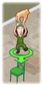

14 |
Grundlagen der Bauphase |
 |
 Bauen von Mobiliar
Bauen von MobiliarUm mit dem Möbelbau zu beginnen, musst du einen Arbeiter einem Objekt zuteilen.
So wird ein Arbeiter einem Objekt zugeteilt  Wähle einen Arbeiter, indem du mit der Wii-Fernbedienung auf ihn zeigst und den A-Knopf gedrückt hältst.
Dadurch ergreifst du den Arbeiter und kannst ihn durch das Zimmer ziehen.
Lasse einfach den A-Knopf wieder los, um ihn auf einem der unvollendeten Möbelstücke abzusetzen.
Markiertes Mobiliar
Durch Zuteilung passender Arbeiter senkst du den Energieverbrauch beugst wirksam Verletzungen vor.
Kalender
Während das Team baut und die Zeit verstreicht, wird im Kalender automatisch auf 0 Tage heruntergezählt.
Falls der Kalender 0 Tage erreicht, bevor das Team das Zimmer fertig hat, beginnt die Bauphase wieder von vorn.
Beschleunigen des Bautempos
Du kannst einem Arbeiter helfen, indem du mit der Wii-Fernbedienung auf ihn zeigst und den B-Knopf gedrückt hältst. Nun wird das Werkzeug angezeigt, das er benutzt.
Führe bei gedrücktem B-Knopf mit der Wii-Fernbedienung die im Werkzeugkasten angezeigte Aktion durch.
Solange du dies tust, ist das Bautempo des Arbeiters erhöht.
|
 Manchmal ist Mobiliar in der Farbe eines bestimmten Arbeiters markiert. Wähle in solchen Fällen den farblich passenden Arbeiter aus und teile ihn diesem Objekt zu.
Manchmal ist Mobiliar in der Farbe eines bestimmten Arbeiters markiert. Wähle in solchen Fällen den farblich passenden Arbeiter aus und teile ihn diesem Objekt zu. Der Kalender befindet sich in der rechten oberen Ecke und zeigt, wie viel Zeit du für ein Projekt hast.
Der Kalender befindet sich in der rechten oberen Ecke und zeigt, wie viel Zeit du für ein Projekt hast. Damit die Arbeiten rechtzeitig fertig werden, musst du mithelfen!
Damit die Arbeiten rechtzeitig fertig werden, musst du mithelfen! Achte auf Arbeiter, die um Hilfe bitten. Ein Arbeiter, der Hilfe braucht, stellt die Arbeit ein, bis du ihm hilfst.
Achte auf Arbeiter, die um Hilfe bitten. Ein Arbeiter, der Hilfe braucht, stellt die Arbeit ein, bis du ihm hilfst. |
 |
 |